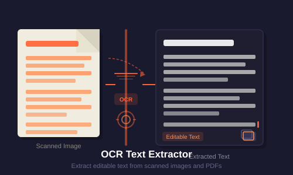

How to Scan Documents on Your Phone for Free
Turn your phone camera into a free document scanner in minutes.

Ever needed to send a document but had no scanner nearby? Your phone can do the job. It is always in your pocket, and the camera is good enough for clean, sharp scans.
This guide shows you how to scan documents on your phone for free. You will learn the steps, the best settings, and a few simple tricks for crisp results every time.
Why scan with your phone
A phone scanner is fast and free. There is no hardware to buy and no software to install when you use a browser tool. You point, capture, and you are done.
Modern phone cameras shoot at high resolution. With good light and steady hands, the result rivals a desktop scanner for everyday paperwork like receipts, forms, and letters.
How to scan step by step
Open the PDFdukan document scanner in your browser. Upload a photo of your page, and the tool finds the edges automatically.
Next, adjust the corners if needed, pick a filter to clean the image, and export. You can save as PDF or JPG. For multi-page files, add more pages before you export.
Phone vs physical scanner
Both work, but they fit different needs. Here is a quick comparison.
| Feature | Phone (CamMaster) | Physical Scanner |
|---|---|---|
| Cost | Free | $50–$500 |
| Portability | Anywhere | Fixed location |
| Speed | Instant | Setup time |
| Quality | Good | Excellent |
| Best for | Daily docs | High-volume archiving |
Get the best quality
Light is everything. Use bright, even light and avoid shadows from your hand or phone. Natural daylight near a window works great.
Hold the phone parallel to the page and fill the frame. After scanning, you can compress the image to shrink the file before sharing.

What to do after scanning
Need the text? Run the scan through OCR text extraction to copy and search words. Want one file? Use Image to PDF to combine pages.
For a deeper dive into organizing scans, read our document digitization guide. To learn more about the technology, see the document scanner article on Wikipedia, store files on Google Drive, or explore OpenCV, the vision library behind edge detection.
Frequently Asked Questions
Ready to Try It?
Open the Scanner → — free, no signup needed.